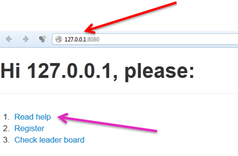
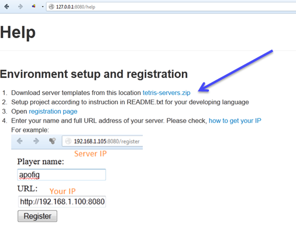
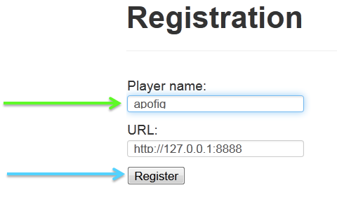
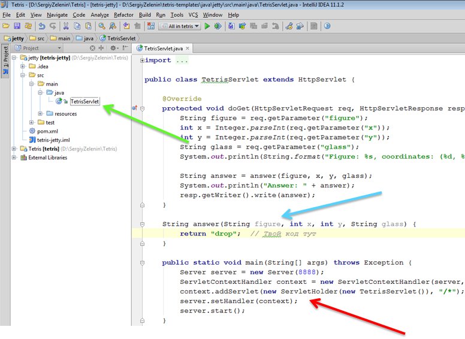
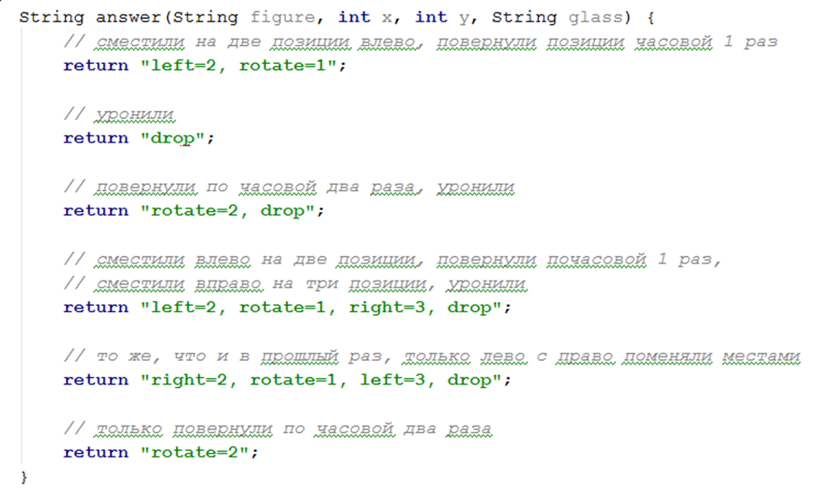
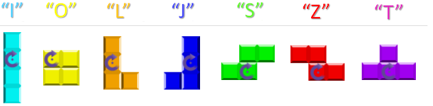
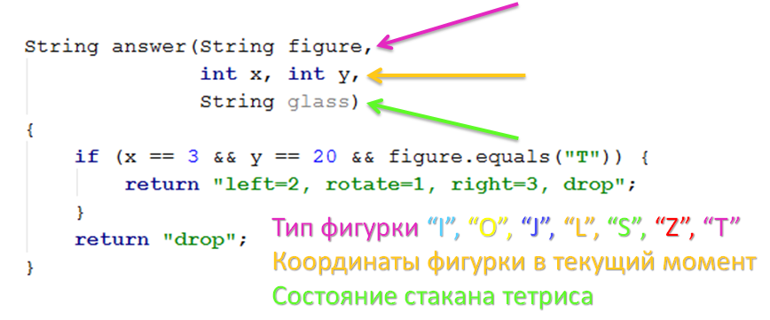
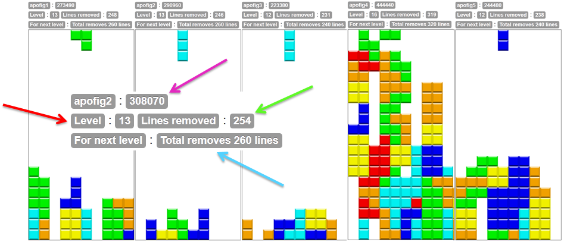
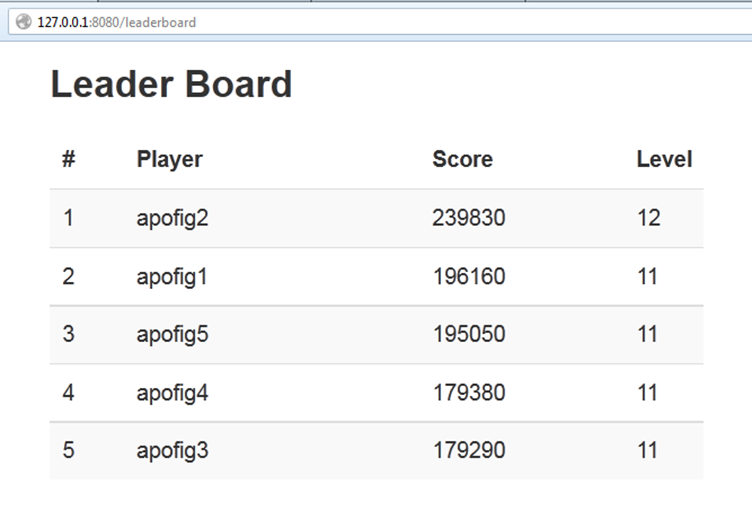

Как играть? Все просто. Ведущий запускает сервак. Каждый участник на страничке игры, которую получает по адресу http://server_ip:8080 в меню Read help может прочитать про правила игры

На этой страничке можно скачать себе клиента и прочитать правила, описанные на этой страничке ниже.
{kind=link}

Клиенты есть под разные платформы и все они находятся в этом архиве. Узнать больше про установку под каждую платформу можно тут:
- Java клиент
- С# клиент
{kind=link}
Далее, после того, как клиент открыл в любимой IDE, на страничке регистрации можно зарегистрироватьcя и начать игру.


После этого сервак тебя будет опознавать по имени, а не по твоему IP. В любой момент можно выйти из игры выбрав пункт меню Unregister.
{kind=link}

Чтобы играть тебе необходимо запустить клиентский сервер — тот единственный Servlet, который есть у тебя в проекте. Вот, например, как выглядит Java клиент.

Запускается он с помощью методы Main. Метод, в котором реализуется игралка в тетрис — answer.
{kind=link}
Важно! Будь внимателен, после того как ты проделал изменение в методе answer необходимо перезапустить Servlet, но перед тем убить прошлый экземпляр — это частая ошибка играющих — запускать несколько экземпляров класса.
Что можно написать в методе answer? Всего есть 4 команды left, right, rotate и drop. Первые три из них параметризируются целым числом, указывающим на сколько позиций переместить фигуру (left и right) или сколько раз повернуть фигуру на 90 градусов по часовой стрелке (rotate). Команды так же можно указывать последовательно одна за другой, разделяя их запятой. Примеры команд серверу

Фигурки вращаются по часовой стрелке на 90 градусов (rotate=1), 180 градусов (rotate = 2) или на 270 градусов (rotate=3). Вращение происходит относительно оси вращения фигурки. Координата фигурки — это координата ее оси вращения.
{kind=link}

Метод answer имеет четыре параметра, первый из котрых — строковый (figure) — определяет тип фигурки. Всего в тетрисе предусмотрено 7 типов фигурок. Второй и третий параметр (x, y) — координаты фигурки в «стакане». И 4й параметр (glass) — состояние «стакана», то есть все те фигурки, которые уже уложены.
{kind=link}

Состояние стакана представлено в виде строки из символов «*» и символов пробела. Место в стакане не занятое фигуркой — пробел, занятие — «*». Падающей фигурки в стакане нет, она там появитсяпосле того как сервер получит команду drop либо фигурка самостоятельно приземлится в ходе игры. Размер стакана (строки glass) 10*20. Стакан закодирован в строку символов рядами, начиная с левого нижнего угла снизу вверх, слева направо.
{kind=link}

Но вернемся к гланому меню.

Тут есть возможность перейти к своему стакану или посмотреть стаканы всех игроков.

Информация по игре:
- имя пользователя
- количество очков, набранное им
- уровень, до которого удалось дойти
- количество линий, «снятых» в игре
- условия для перехода на следующий уровень
{kind=link}
Так же есть возможность посмотреть на скрин

Очки начисляются за каждую снятую линию (чем больше линий снято одновременно — тем лучше), а так же за каждую упавшую фигурку. В случае, если стакан переполнен, конец игры не наступает — стакан обновляется и игроку зачисляются штрафные очки. Количество начисляемых очков и штрафов зависит от уровня игры.
{kind=link}
Игра, в зависимости от ее типа (который устанавливается в начале игры ведущим), может начинаться по разному. Самый распостраненный тип игры, когда изначально появляются только фигурки типа I. C каждым новым уровнем, вероятность появления новой фигурки типа O увеличивается, и достгнув максимума на 4м уровне, эстафета на 5м уровне передается следующей фигурке типа J, вероятность появления которой так же увеличивается с каждым новым уровнем. На 8м уровне появляется фигурка типа L. На 11м — S. На 14м — Z. На 17м — Т.
Впрочем, есть и другие типы игр, в которых уровни переключаются по другим правилам.
Приятной игры!